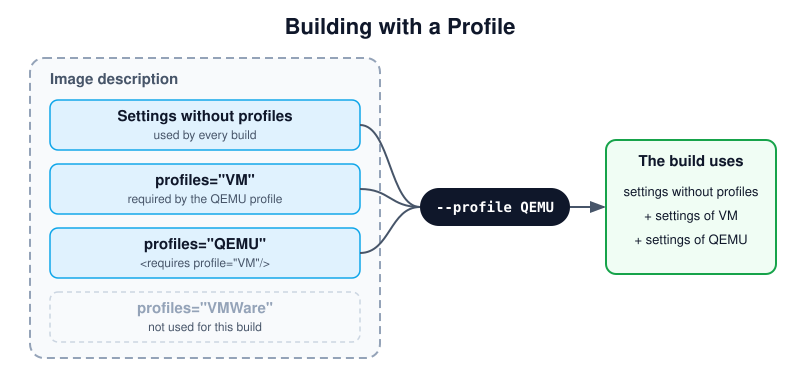

Profiles
A profile is a named set of settings, used in addition to the settings which do not belong to a profile. Profiles build variants of an image from one image description, for example the same disk image for different virtualization platforms.

The settings used for a build with the QEMU profile.
- Diagram description:
The image description contains settings without a
profilesattribute and settings for the profilesVM,QEMUandVMWare. A build with--profile QEMUuses the settings without a profile, the settings ofQEMU, and the settings ofVM, whichQEMUrequires. The settings ofVMWareare not used.
Profiles are declared with profile elements in the profiles section.
Each profile has a name, used to select it, and a description for
documentation purposes. Elements which support the profiles attribute,
such as preferences, packages, repository or users, are only
used for the profiles listed in it, comma-separated. A profile includes
the settings of other profiles with requires elements:
<image schemaversion="8.5" name="kiwi-test-image-some">
<profiles>
<profile name="VM" description="virtual machine"/>
<profile name="QEMU" description="virtual machine for QEMU">
<requires profile="VM"/>
</profile>
<profile name="VMWare" description="virtual machine for VMWare">
<requires profile="VM"/>
</profile>
</profiles>
<preferences>
<version>15.0</version>
<packagemanager>zypper</packagemanager>
</preferences>
<preferences profiles="QEMU">
<type image="oem" format="qcow2" filesystem="ext4"/>
</preferences>
<preferences profiles="VMWare">
<type image="oem" format="vmdk" filesystem="ext4"/>
</preferences>
</image>
The profile to build is selected on the command line with the global
--profile option, which can be given multiple times. A profile with
the attribute import="true" is used if no profile is selected. For
details, see Building Images with Profiles.